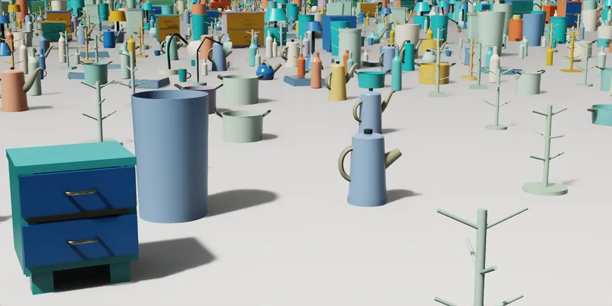
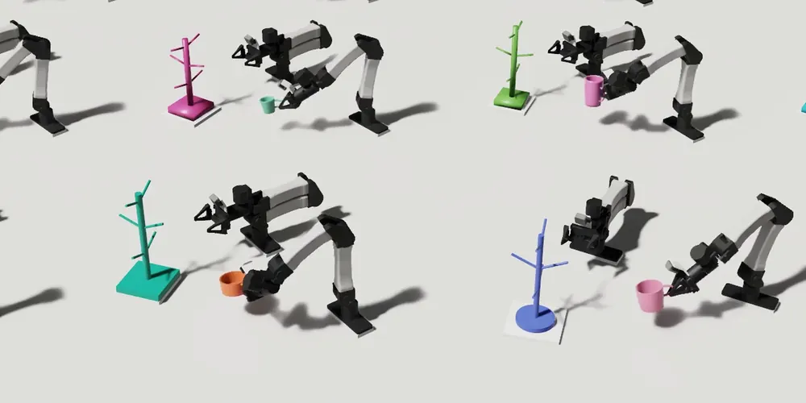

Author a Generator.
Agents write and validate category-level procedural code, then sample geometry and appearance variations.
Agentic Assets + Demonstration Generation
Generate Diverse Worlds.
Train Robots for Unseen Geometries.
SimScale turns an object description and one human demonstration into diverse asset families and thousands of successful robot trajectories, so policies handle shapes and poses they were never shown.
Start Here / Overview
Collecting a new demonstration for every object geometry is expensive. SimScale separates the reasoning needed to build reusable tools from the computation needed to generate training data at scale.
Agents write and validate category-level procedural code, then sample geometry and appearance variations.
Agents decompose one human demonstration and adapt executable task programs across object geometries.
DexMimicGen expands accepted source trajectories across poses. Imitation learning trains policies for held-out objects.
01 / Real-World Results
Policies trained only in simulation are tested on physical objects without object-specific fine-tuning.
Compare aggregate policy scores across three tasks. These are mean task scores from 0 to 100, including partial credit; they are distinct from simulation task-completion success rates.
| Training Condition | Put Pot | Hang Mug | Put Charger |
|---|
† Incomplete object panel: four of five charger combinations in the system study; four common charger pairs in the asset-source study. ‡ Recorded trial lists require reconciliation; the manuscript retains the explicitly recorded values. Unavailable results are not treated as zero.
Source: manuscript real-world results tables · Download the displayed score data
For each task, one policy runs on five different real objects in a row. The videos are uncut: policy rollouts play at 8×, resets between rollouts at 32×, and HangMug slows to 2× with a close-up while hanging. The clock shows the real elapsed time.
Consecutive rollouts on one object, which is moved to a new pose after each rollout. Choose an object below.
02 / Asset Generation
Each task includes multiple object instances with different shapes, sizes, and appearances.
Choose a category. Each video runs that category’s AssetEngine generator for every frame, with the same major parameters as the Live Generators below. All continuous parameters move together, each discrete option switches once, and movable parts open and close.
First one generator with every major parameter, discrete option, and joint moving together, then 20 categories side by side, each running its own generator.
Hands-On / Live Procedural Generators
Move the sliders to run the AssetEngine generators live.
Some parameter ranges are slightly widened from AssetEngine’s raw output.
Drag to Orbit · Scroll or Pinch to Zoom · Double-Click to Reset
03 / Demonstration Generation
DemoEngine adapts agent-authored task programs across geometries. DexMimicGen then expands accepted source trajectories across object poses and retains successful executions.
04 / Simulation Evaluation
Compare task-completion success on held-out asset geometries. Each training condition uses 4,000 generated demonstrations per task; demonstration generation is held fixed to isolate the asset source.
30 SimScale configurations per task, a held-out 20% of RoboCasa assets, and five real-object digital-twin pairs.
GR00T N1.6 and DINOv3 + FMT are evaluated across generated families, curated assets, and digital twins.
Success requires completing the manipulation task. Scores below are percentages with reported standard errors.
| Training Asset Source | Put Pot | Hang Mug | Put Charger |
|---|
Source: manuscript simulation results table · Download the displayed score data. RoboCasa has no charger assets; unavailable comparisons are shown explicitly.
05 / Baseline Comparison
SimScale combines category-level procedural assets with geometry-aware task adaptation. The simulation table above compares training asset sources; the selected real-world rollouts below show matched task objects.
Articraft uses agents to author individual articulated assets. SimScale uses its SDK to author reusable category-level generators, then samples controlled variation and connects it to robot data generation.
Articraft paper ↗Curated asset libraries and real-to-sim twins or cousins provide alternative training geometries. SimScale learns from a sampled category distribution; our simulation study compares these sources with the same demonstration budget.
View the measured comparison ↑DexMimicGen efficiently expands source demonstrations across poses. SimScale adds agent-authored task programs and geometry-specific source adaptation, then uses DexMimicGen for pose expansion.
DexMimicGen project ↗MolmoBot scales task-and-motion-planning data for pick-and-place and articulated-object tasks. SimScale studies geometry-aware source generation for bimanual pot placement, mug hanging, and charger placement.
MolmoBot paper ↗These cards describe method scope. The measured evidence is the asset-source study above; no head-to-head benchmark against MolmoBot or DexMimicGen is claimed.
| Method | Source Behavior | What Scales | SimScale’s Added Role |
|---|---|---|---|
| DexMimicGen | Supplied source demonstrations | Object-centric trajectory transformation and replay | Agents author and adapt source programs across asset geometries before calling DexMimicGen for pose expansion |
| MolmoBot | Task-and-motion-planning experts | Procedural environments, assets, and expert trajectories for pick-and-place and articulated-object manipulation | Agent-authored, geometry-aware source programs for the demonstrated bimanual manipulation tasks |
| SimScale | One human reference guides agent-authored task programs | Procedural asset sampling, agent adaptation across geometry, and DexMimicGen expansion across poses | Combines flexible source generation with reusable execution tools |
Selected real-world rollouts · 8× playback · illustrative videos, not aggregate success rates
06 / Method
SimScale turns a short asset description and one human demonstration collected in simulation into a training set that spans object geometry and pose.
“Mugs with handles and branched racks”
An author agent encodes dimensions, part variants, dependencies, and articulation. A coverage critic and geometry validator guide revisions. Accepted code is reused for procedural sampling.

A single human trajectory collected in simulation.
# Illustrative pseudocode
program = author_task(source_demo)
for asset in asset_family:
task = agent_adapt(program, asset)
rollout = task.execute()
if rollout.success:
dataset += dexmimicgen(rollout, poses)Agents reuse the task decomposition while adapting targets and logic to new geometry. DexMimicGen expands successful source runs across poses; task checks filter the resulting executions.

AssetEngine
AssetEngine writes one parameterized procedural generator whose controls describe meaningful variation across an object category.
OutputDiverse, physically plausible simulation assets
DemoEngine
DemoEngine turns the reference trajectory into a reusable task program, then uses simulation feedback and robot tools to make it work across the asset family.
OutputDiverse, successful demonstrations across assets and poses
Project Summary
Diverse assets. Generated demonstrations. One policy tested on objects it has not seen before.